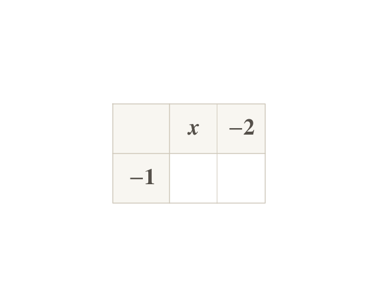
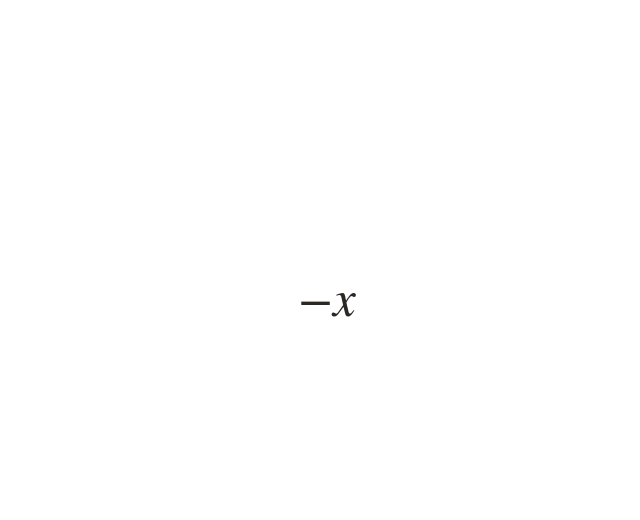
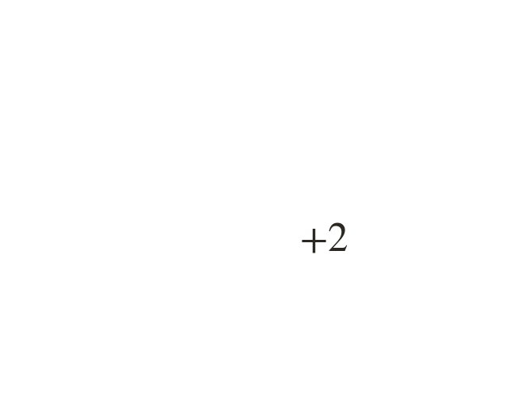

Expanding several brackets
Expand one bracket at a time, then collect like terms. Subtracting a bracket changes every sign inside it. So
An expression with several brackets is expanded one bracket at a time, then like terms are collected. Subtracting a whole bracket changes the sign of every term in it: